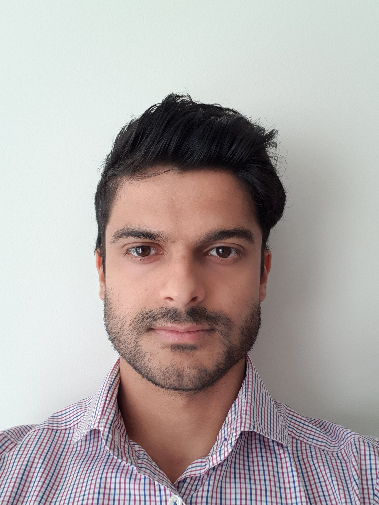

This is my personal website!
I developed a keen interest in technology and general curiosity about how things worked during my electrical and computer systems engineering degree in Monash University. The maths and science behind how things worked really intrigued me and set me on my path in my career in IT. My initial work experience in IBM storage made me think about how IT infrastructure worked together in general and what its role in cloud technologies was. After working in Australia's largest telco, I was able to explore different technologies being used and gained exposure to many different network products and vendors, where I was able to use my skills in automation and learn new tools to optimize how products were built, tested and deployed. Now in that I'm in my consulting role look to build on my well-rounded skill set to gain further expertise and look for new ways to improve how teams work together in a cloud and devops environment.